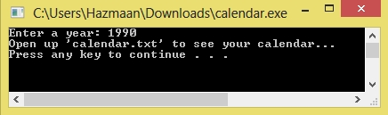

/*C Program to print Calender*/
#include<stdio.h>
#include<stdlib.h>
#define TRUE 1
#define FALSE 0
int get_day_code (int year);
/* day_code :0 = Sun, 1 = Mon, 2=Tue, 3=Wed, 4=Thu, 5=Fri, 6=Sat */
int get_leap_year (int year);
void print_calendar (File *fout, int year, int day_code, int leap_year);
int get_year (void);
main()
{
int year, day_code, leap_year;
File *fout;
fout = fopen ("calendar.txt", "w");
year = get_year();
day_code = get_day_code (year);
leap_year = get_leap_year (year);
print_calendar(fout, year, day_code, leap_year);
printf("Open \'calendar.txt\' to see your calendar...\n");
system("pause");
}
int get_year (void)
{
int year;
printf ("Enter a year: ");
scanf ("%d", &year);
return year;
}
int get_day_code (int year)
{
int day_code;
int x1, x2, x3;
x1 = (year - 1.)/ 4.0;
x2 = (year - 1.)/ 100.;
x3 = (year - 1.)/ 400.;
day_code = (year + x1 - x2 + x3) %7;
return day_code;
}
int get_leap_year (int year)
{
if(year% 4==0 && year%100 != 0 || year%400==0)
return TRUE;
else return FALSE;
}
void print_calendar (File *fout, int year, int day_code, int leap_year)
{
int days_in_month,day,month;
fprintf (fout," %d", year);
for ( month = 1; month <= 12; month++ ) {
switch ( month ) { /* print name and set days_in_month */
case 1:
fprintf(fout,"\n\nJanuary" );
days_in_month = 31;
break;
case 2:
fprintf(fout,"\n\nFebruary" );
days_in_month = leap_year ? 29 : 28;
break;
case 3:
fprintf(fout, "\n\nMarch" );
days_in_month = 31;
break;
case 4:
fprintf(fout,"\n\nApril" );
days_in_month = 30;
break;
case 5:
fprintf(fout,"\n\nMay" );
days_in_month = 31;
break;
case 6:
fprintf(fout,"\n\nJune" );
days_in_month = 30;
break;
case 7:
fprintf(fout,"\n\nJuly" );
days_in_month = 31;
break;
case 8:
fprintf(fout,"\n\nAugust" );
days_in_month = 31;
break;
case 9:
fprintf(fout,"\n\nSeptember" );
days_in_month = 30;
break;
case 10:
fprintf(fout,"\n\nOctober" );
days_in_month = 31;
break;
case 11:
fprintf(fout,"\n\nNovember" );
days_in_month = 30;
break;
case 12:
fprintf(fout,"\n\nDecember" );
days_in_month = 31;
break;
}
fprintf(fout,"\n\nSun Mon Tue Wed Thu Fri Sat\n" );
for ( day = 1; day <= 1 + day_code * 5; day++ )
fprintf(fout," " );
/* displays dates for one month */
for ( day = 1; day <= days_in_month; day++ ) {
fprintf(fout,"%2d", day );
if ( ( day + day_code ) % 7 > 0 )
fprintf(fout,"" );
else
/* skips to next line to start with Sunday */
fprintf(fout, "\n " );
}
/* set day_code for next month to begin */
day_code = ( day_code + days_in_month ) % 7;
}
}
Output:

Calender.txt
1990
January
Sun Mon Tue Wed Thu Fri Sat
1 2 3 4 5 6
7 8 9 10 11 12 13
14 15 16 17 18 19 20
21 22 23 24 25 26 27
28 29 30 31
February
Sun Mon Tue Wed Thu Fri Sat
1 2 3
4 5 6 7 8 9 10
11 12 13 14 15 16 17
18 19 20 21 22 23 24
25 26 27 28
March
Sun Mon Tue Wed Thu Fri Sat
1 2 3
4 5 6 7 8 9 10
11 12 13 14 15 16 17
18 19 20 21 22 23 24
25 26 27 28 29 30 31
April
Sun Mon Tue Wed Thu Fri Sat
1 2 3 4 5 6 7
8 9 10 11 12 13 14
15 16 17 18 19 20 21
22 23 24 25 26 27 28
29 30
May
Sun Mon Tue Wed Thu Fri Sat
1 2 3 4 5
6 7 8 9 10 11 12
13 14 15 16 17 18 19
20 21 22 23 24 25 26
27 28 29 30 31
June
Sun Mon Tue Wed Thu Fri Sat
1 2
3 4 5 6 7 8 9
10 11 12 13 14 15 16
17 18 19 20 21 22 23
24 25 26 27 28 29 30
July
Sun Mon Tue Wed Thu Fri Sat
1 2 3 4 5 6 7
8 9 10 11 12 13 14
15 16 17 18 19 20 21
22 23 24 25 26 27 28
29 30 31
August
Sun Mon Tue Wed Thu Fri Sat
1 2 3 4
5 6 7 8 9 10 11
12 13 14 15 16 17 18
19 20 21 22 23 24 25
26 27 28 29 30 31
September
Sun Mon Tue Wed Thu Fri Sat
1
2 3 4 5 6 7 8
9 10 11 12 13 14 15
16 17 18 19 20 21 22
23 24 25 26 27 28 29
30
October
Sun Mon Tue Wed Thu Fri Sat
1 2 3 4 5 6
7 8 9 10 11 12 13
14 15 16 17 18 19 20
21 22 23 24 25 26 27
28 29 30 31
November
Sun Mon Tue Wed Thu Fri Sat
1 2 3
4 5 6 7 8 9 10
11 12 13 14 15 16 17
18 19 20 21 22 23 24
25 26 27 28 29 30
December
Sun Mon Tue Wed Thu Fri Sat
1
2 3 4 5 6 7 8
9 10 11 12 13 14 15
16 17 18 19 20 21 22
23 24 25 26 27 28 29
30 31